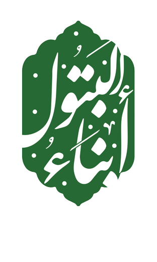
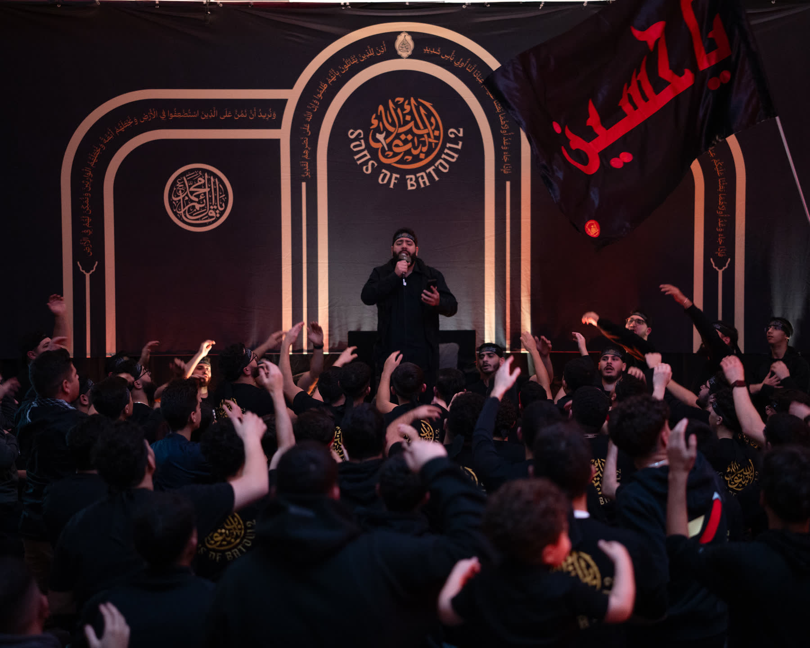
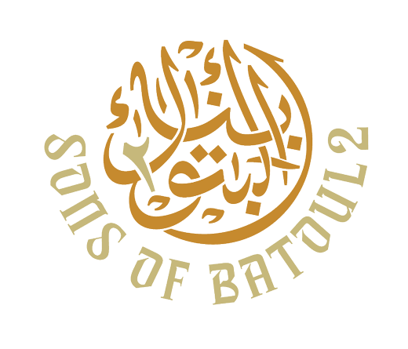
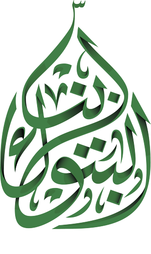
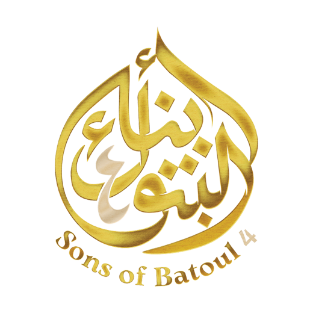

1445
The first year in our archive
A hall with the name of Allah on every tile of the wall, red headbands and black shirts. Latm in the round, and a majlis that brought the room to tears.

An annual gathering in remembrance of Lady Fatima al-Zahra (AS). Majalis, lectures, khutbas and latm, with a new emblem and a recorded latmiya each year.
Al-Batoul is one of the titles of Lady Fatima al-Zahra (AS), and Abna Al-Batoul, "the sons of al-Batoul", is the Mawkeb's annual gathering in her remembrance.
Each year has its own emblem, its own stage and its own latmiya. The nights bring together a majlis, a lecture or khutba, and latm, and the Madheef team serves food for everyone who comes.
The archive below shows how each year was marked. It describes only what the photographs and recordings show.
Four years in the Mawkeb's archive, each with its emblem and photographs.

A hall with the name of Allah on every tile of the wall, red headbands and black shirts. Latm in the round, and a majlis that brought the room to tears.

A stage built as an arch, with the emblem at its crown and on the back of every shirt. A lecture, a majlis and latm under red light.

A green stage, a full hall, and a latmiya produced as a reel with English subtitles.
The reel runs 1 minute 23 seconds and plays with sound. More from 1447 is on our Instagram highlights.

Black and white roses across the backdrop, the emblem in gold. Khutbas, majalis and latm, photographed night by night; some nights were photographed in black and white.
Every night of Abna Al-Batoul is run by the Mawkeb's nine teams. Choose one and you'll be placed with its lead.